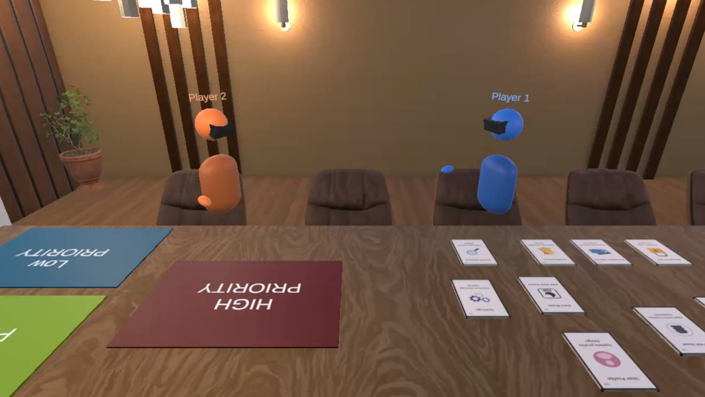
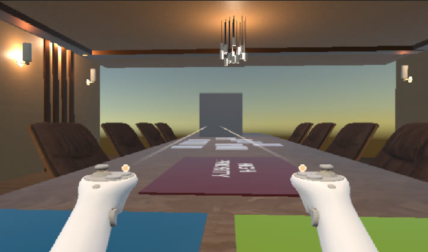
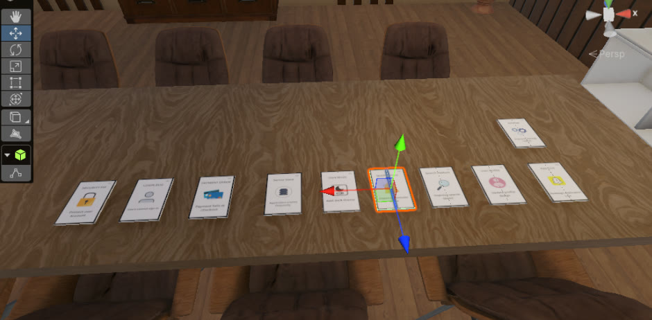
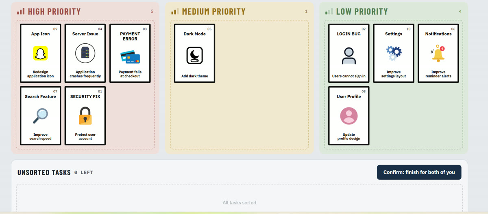

Immersive VR Meeting Room
How does remote collaboration in an immersive VR environment compare to Microsoft Teams in terms of presence, communication quality and engagement? I built a multiplayer VR meeting room to find out.
Overview
Remote collaboration grew rapidly after COVID-19, but different tools create very different experiences. Screen-based video calls like Microsoft Teams are familiar and widely used, yet they can limit the sense of presence and engagement. Immersive VR puts people in a shared three-dimensional space with avatars and objects they can physically interact with, but it brings its own usability and comfort challenges.
For my MSc dissertation I designed, built and tested a multiplayer VR meeting room, then ran a controlled study comparing it with Microsoft Teams, using the same collaborative task, the same participants and two platforms.
The problem
- Remote collaboration can lack parts of natural face-to-face interaction.
- Presence, engagement and communication may change depending on the medium.
- VR adds immersion and physical interaction, but also usability challenges.
The research gap: earlier studies comparing VR with video conferencing produced mixed findings that depended on the task, platform and study conditions. No medium was consistently better. A controlled comparison using the same task adds further evidence.
Grounded in Social Presence Theory (Short, Williams & Christie, 1976) and Media Richness Theory (Daft & Lengel, 1986), and building on comparative studies by Van Gent et al. (2024), Bonfert et al. (2023) and Macchi & De Pisapia (2024).
What I built
A networked VR meeting room in Unity 6 for Meta Quest 2. Two participants join the same room from separate headsets, see each other as avatars around a conference table, and work through a shared card-sorting task together.
First-person XR view
Participants see the room through the headset and use tracked controllers as their hands.
Grabbable task cards
Ten physical cards on the table that can be picked up and placed onto priority mats.
Networked avatars
Photon PUN syncs both players' avatars and every card movement in real time.
Priority mats
High, Medium and Low priority zones on the table give the task a clear physical structure.



The task
Two participants discussed ten task cards, such as a security fix, a login bug and a payment error, and jointly sorted them by priority. The same task was used in both environments, giving a consistent basis for comparison.
- 1Discuss
Talk through each card together.
- 2Decide
Agree on its priority level.
- 3Sort
Place it on High, Medium or Low.

How I tested it
A mixed-methods comparative study with a within-participant design: every participant experienced both environments and compared them directly.
Questionnaire: completed after both conditions, rating presence, communication quality, engagement and overall preference on a 5-point scale from "much more in Teams" to "much more in VR". This showed what participants preferred.
Semi-structured interviews: covering collaboration, physical interaction, communication, decision-making, usability, headset comfort, technical problems and suggested improvements. These explained why they experienced differences.
Results
Average preference across the questionnaire items for each theme:
- Presence: 62.5% felt more "together" in VR, compared with 37.5% in Teams.
- Communication: communicating ideas clearly was split evenly (37.5% each), while Teams led for reaching a decision (50% vs 25%).
- Engagement: 62.5% felt more engaged in the task in VR, but Teams led for decision-making involvement (62.5% vs 37.5%).
Descriptive percentages from 8 participants. No significance testing was performed.
What participants said
Number of participants (out of 8) who raised each theme in the interviews:
Grabbing and moving cards felt positive and interactive.
VR helped them stay focused and attentive.
Teams felt clearer or easier for discussion and decisions.
Controller use and grabbing cards got in the way.
Headset discomfort or fatigue.
Tracking, lag or connection issues.
Conclusion
Neither immersive VR nor Microsoft Teams was better in every aspect of remote collaboration. Immersion does not automatically mean better collaboration.
The shared 3D space and visible grab interactions made partners feel present, and actively handling the cards kept people involved. Teams, however, stayed stronger for familiar communication and group decision-making, and technical issues could interrupt conversation in VR.
The right choice depends on the activity: VR where presence, physical interaction and engagement matter; Teams for familiar communication and collaborative decisions.
Limitations & next steps
Limitations
- Small sample: 8 participants, so results show tendencies rather than definitive conclusions.
- Single task: one card-sorting activity can't represent every workplace scenario.
- Order effect: every pair did VR first, so familiarity may have shaped the Teams session.
- Prototype limits: grab controls, connection issues and headset comfort.
What I'd do next
- Test with a larger, more diverse group of participants.
- Try other tasks: brainstorming, problem-solving and longer meetings.
- Improve the prototype with more intuitive grabbing, hand tracking and better networking.
- Counterbalance the order so half the pairs start in Teams.